地政学
ナッソーはフロリダ、キューバ、カリブ海航路に近い島国首都です。米国観光、海上交通、金融規制、災害対応、移民管理が重なり、小さな国が開放性と主権を調整する現場になっています。港も外交を映す要所です。
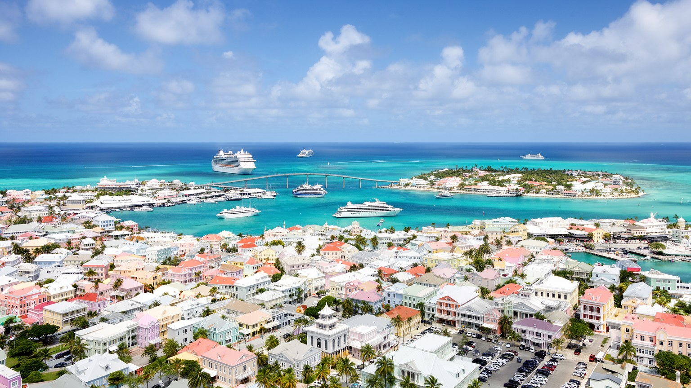
🇧🇸 バハマ国 / ニュープロビデンス島 / World City Atlas
カリブ海と大西洋の結節点にあるバハマの首都です。港、官庁、クルーズ観光、金融サービス、植民地史、ジャンカヌー、島の住宅、ハリケーンへの備えが、リゾートの明るさの下で重なります。
都市の骨格
ナッソーはリゾートの玄関であると同時に、官庁、港、銀行、学校、病院、市場、住宅地が集まる生活都市です。観光の前景だけでなく、輸入、雇用、移民、気候リスク、歴史記憶を重ねると、バハマの都市性が見えてきます。
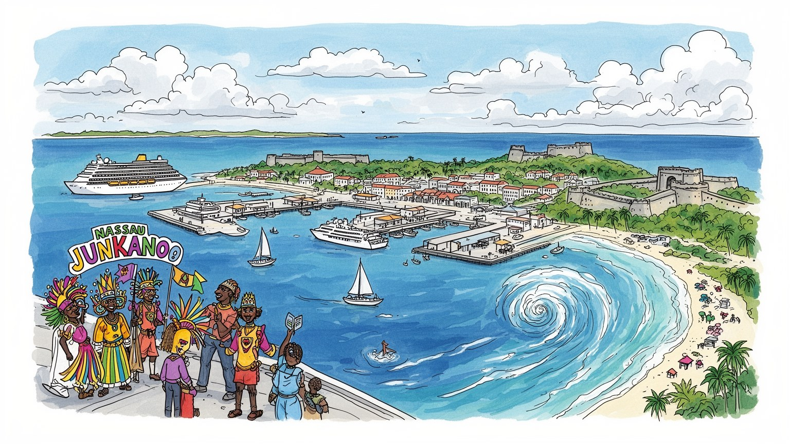
ナッソーはフロリダ、キューバ、カリブ海航路に近い島国首都です。米国観光、海上交通、金融規制、災害対応、移民管理が重なり、小さな国が開放性と主権を調整する現場になっています。港も外交を映す要所です。
観光、クルーズ港、ホテル、金融、行政、小売、建設、物流が雇用を作ります。華やかな海辺の背後で、客室清掃、送迎、警備、調理、港湾作業、事務職が島の所得を日々支えています。季節性も課題です。技能も問われます。
ジャンカヌー、教会、英国植民地期の街路、アフリカ系バハマ人の音楽、海の食文化がナッソーを形作ります。観光地の色彩の奥に、奴隷制、解放、移民、家族、信仰の記憶が重なる都市です。祭りも祈りも続きます。
旅行者は港、ビーチ、要塞、市場、島巡りへ向かいます。住民は住宅費、渋滞、輸入物価、治安、学校、医療、ハリケーンへの備えと向き合います。楽園の首都は、生活コストの高い都市でもあります。日常も見える街です。
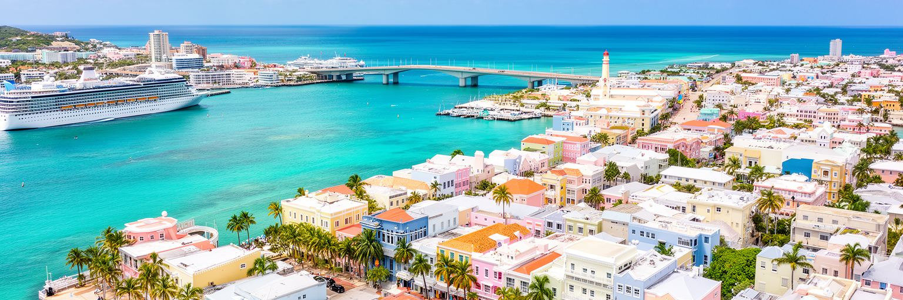
ナッソーの都市性は、港から読むとよく分かります。ニュープロビデンス島の北岸に開いた港は、官庁街、商店街、クルーズ埠頭、フェリー、倉庫、タクシー、橋で結ばれたパラダイス島を一つの景観にまとめています。バハマは多島海の国であり、首都は国土の中心というより、外部との入口として機能します。政府機関、金融機関、港湾サービス、観光案内、学校、病院がナッソーに集まり、離島からの人や物もここを経由します。港は華やかなクルーズ客の舞台ですが、同時に食品、燃料、建材、医薬品を運ぶ生活インフラです。輸入に頼る島国では、港の混雑、燃料価格、通関、台風後の復旧が家計に直接響きます。首都の交通も港を中心に詰まりやすく、観光バス、通勤車、配送車が狭い街路で交差します。ナッソーでは、青い海がただの背景ではありません。国の経済、行政、物流、外交、観光を引き受ける都市の基盤です。港を歩くと、バハマが海で世界に開かれ、同時に海に依存する脆さを抱えていることが見えてきます。港湾整備の質は、観光客の第一印象だけでなく、住民の物価、災害時の補給、離島との公平性にも関わります。入港手続きや岸壁の割り当てが滞れば、ホテルの食材も家庭の生活用品も遅れます。小さな岸壁の使い方が、国家の生活圏を支えています。首都の安定は港の安定でもあります。
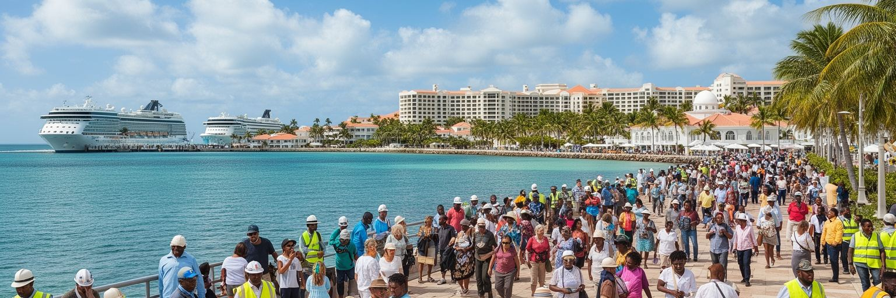
ナッソーはカリブ海クルーズの代表的な寄港地で、数時間だけ滞在する旅行者が港前の街路へ一斉に流れ込みます。ベイストリートの店、土産物屋、レストラン、タクシー、ツアー会社、ビーチ送迎、アトラクションは、この短い訪問時間をめぐって動きます。観光はバハマ経済の柱であり、雇用と外貨を生みますが、都市に偏りも作ります。港に近い空間は旅行者向けの商品や安全管理が優先され、地元住民の買い物や移動とは別のリズムで整えられます。クルーズ客は宿泊客より支出の幅が限られるため、街にどれだけ価値が残るかも課題です。港の拡張や再開発は、雇用、税収、景観、公共空間の使い方を変えます。観光が強い都市ほど、世界の景気、燃料価格、感染症、ハリケーン、航空便や船会社の判断に左右されます。ナッソーに必要なのは、人数を受け入れるだけでなく、歴史地区、市場、文化施設、地元飲食、離島ツアーへ利益を広げる仕組みです。観光客が短時間でも街の成り立ちを理解し、住民が過度な混雑や物価上昇だけを負わない関係が重要です。ナッソーの港は、歓楽の入口であると同時に、観光依存の都市が持続性を試される場所です。滞在時間を少し延ばし、地元事業者が説明と体験を提供できれば、港前の消費はより広い都市の収入になります。観光の量と質を調整する力が問われています。
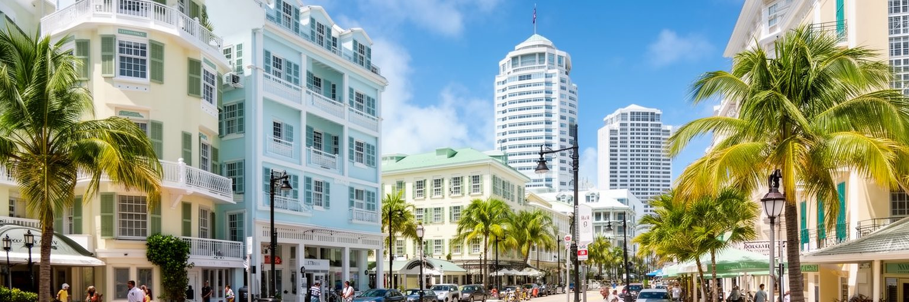
ナッソーは観光都市であるだけでなく、長く国際金融サービスの拠点でもありました。銀行、信託、保険、資産管理、法人サービスは、英語圏、時差、政治的安定、税制、米国市場への近さを背景に発展してきました。けれども現代の金融都市にとって、低税率や機密性だけで競争する時代は終わっています。マネーロンダリング対策、税務情報交換、実質的所有者の透明性、国際基準への対応が、国の信用を左右します。小国の金融部門は高所得の雇用を生む一方、評判の傷が観光や外交にも波及しやすいです。ナッソーの事務所街では、ホテルや港の華やかさとは違う静かな経済が動いています。弁護士、会計士、銀行員、規制当局、公務員が、国際ルールと国内の収入源を調整しています。金融サービスは島国にとって多角化の道ですが、住民全体へ利益が広がるには教育、技能訓練、住宅、交通、デジタル基盤が必要です。観光と金融は別々の産業に見えて、どちらも外部からの信頼に依存します。ナッソーが金融都市であり続けるためには、透明性を負担ではなく競争力として扱い、若い働き手が専門職へ進める環境を整えることが大切です。小さな首都では、国際会議の評価や規制リストへの掲載がすぐに雇用不安へ変わります。信用を守る仕事は、海辺の景観より見えにくくても、都市の将来を支える重要な基盤です。
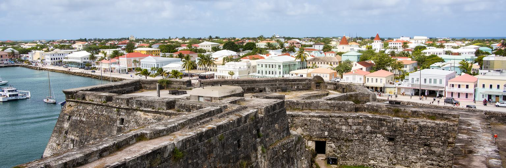
ナッソーの歴史は、海賊の伝承だけでは語り切れません。十八世紀の私掠船や海賊の物語は観光資源として強い魅力を持ちますが、その背景には英国植民地支配、大西洋交易、奴隷制、解放、プランテーション経済、帝国の軍事拠点としての時間があります。街には総督府、要塞、教会、植民地期の公共建築が残り、港の近さが権力と商業を結びつけてきたことを示します。海賊の自由なイメージは、観光向けには楽しい物語になりますが、同じ海は奴隷にされた人びとや労働者、移民にとって支配と移動の場でもありました。ナッソーを歩く時、砦や石造りの階段、パステル色の建物を美しい風景として見るだけではなく、誰が建て、誰が働き、誰の記憶が目立たなくされたのかを考える必要があります。独立後のバハマは、植民地期の都市空間を観光と行政の資産として使いながら、アフリカ系住民の文化と政治参加を国家の中心に置いてきました。歴史地区の保存は、建物の外観を整えるだけでは不十分です。海賊伝説、英国風の制度、奴隷制の痛み、解放後の共同体を同時に説明することで、街の記憶は厚みを持ちます。ナッソーの魅力は軽快ですが、その軽快さの下には大西洋世界の不均衡と抵抗の歴史があります。観光客に分かりやすい物語と、住民が受け継ぐ複雑な記憶をどう並べるかが、歴史都市としての成熟を左右します。
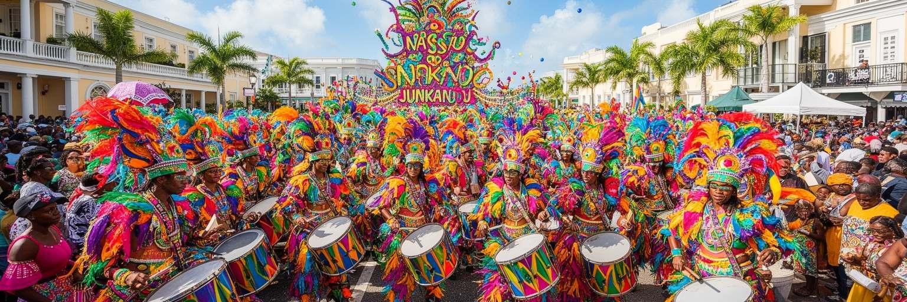
ナッソーの文化を語るうえで、ジャンカヌーは欠かせません。色鮮やかな衣装、太鼓、笛、踊り、深夜から朝へ続く行進は、観光客向けのショーである前に、地域の誇り、準備、競争、記憶を集める共同体の営みです。ボクシングデーや新年のパレードに向けて、グループは長い時間をかけて衣装や音を作り、家族、友人、若者、職人が関わります。ジャンカヌーは奴隷制と解放の歴史、アフリカ系ディアスポラの表現、教会暦、都市の路上文化を重ねています。港やホテルの明るい観光イメージとは違い、祭りの準備は倉庫、住宅地、学校、地域団体の中で進みます。そこには創造性だけでなく、資金、場所、世代交代、安全管理、騒音、商業化の課題もあります。文化が観光資源になるほど、誰が利益を得て、誰が表現の主導権を持つのかが問われます。ナッソーの街路は、ジャンカヌーの時だけ別の都市になります。普段は車と観光客が行き交う道路が、音と身体の記憶を受け止める舞台へ変わります。この祭りを理解すると、ナッソーが単なるリゾートの玄関ではなく、アフリカ系バハマ人の歴史と創造力が公共空間を作り替える首都だと分かります。祭りの後に残る疲れ、誇り、採点への議論も、都市文化の一部です。観光のために整えすぎず、地域の手で続く荒々しさを残すことが、ジャンカヌーの力を守ります。
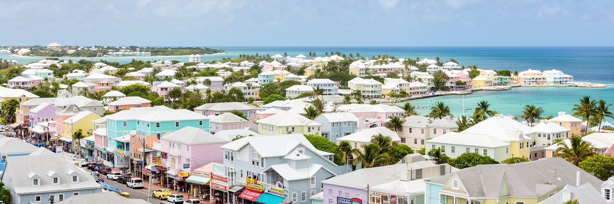
ナッソーの日常は、港前の観光地区だけでは見えません。ニュープロビデンス島には低層住宅、集合住宅、学校、教会、商店、ショッピングセンター、道路沿いの事務所が広がり、住民は車で職場、学校、病院、港、空港へ移動します。島の生活は海に近い開放感を持ちますが、土地が限られ、輸入品に頼り、観光地としての需要も強いため、住宅費と生活費は重くなりがちです。所得の高いリゾート関連地区やゲーテッドな開発と、低所得層の住宅地との間には見えにくい格差があります。若者が独立して住む場所を見つけにくいこと、賃貸の質、公共交通の弱さ、渋滞、治安への不安は、首都の生活を左右します。島国では建材や食品の多くが輸入されるため、燃料価格や港の混乱が家計に直結します。観光業で働く人が、観光客の楽しむ海辺の近くに住めない場合もあります。ナッソーの住宅問題は、景観の美しさと生活の持続性をどう両立するかという課題です。安全で手頃な住宅、通勤しやすい交通、学校と医療へのアクセス、地域の公共空間が整わなければ、観光都市の人材も安定しません。島の暮らしは穏やかなだけではなく、限られた土地と高い物価の中で毎日調整される現実です。住宅政策は福祉だけでなく、観光と金融を支える労働基盤でもあります。住民が島に残り、家族を育てられる条件が、首都の強さを決めます。
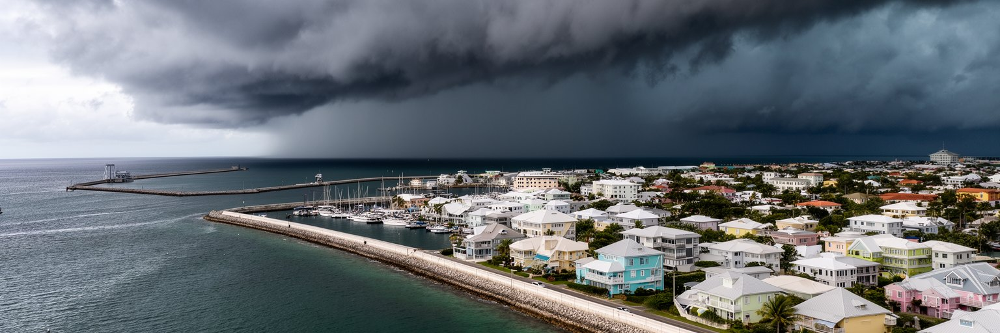
ナッソーの気候は、暖かい海、貿易風、強い日差しが魅力を作りますが、同時にハリケーン、高潮、強雨、海面上昇というリスクを抱えています。ニュープロビデンス島は標高が低く、海岸近くに住宅、ホテル、道路、港湾施設が集まるため、暴風雨の影響は観光だけでなく生活全体に及びます。バハマでは大型ハリケーンが離島に深刻な被害を与えてきました。ナッソーは首都として、避難、医療、港の再開、電力、水、通信、救援物資の配分を担う中心でもあります。気候リスクは災害の日だけの問題ではありません。保険料、建築基準、排水、海岸保全、発電、廃棄物、観光施設の投資判断に常に影響します。リゾートの広告では青い海が安心感を与えますが、住民にとって海は美しさと不安を同時に運びます。暑さの増加は屋外労働、観光客の体調、学校、電力需要にも関わります。ナッソーが気候変動に備えるには、防波堤や排水だけでなく、低所得地区の住宅補強、避難情報の伝達、公共交通、医療の継続、離島支援までを含む都市政策が必要です。小島嶼国の首都として、ナッソーは国際的な気候交渉の言葉を、住民の道路や屋根や電気代へ翻訳する場所でもあります。気候への備えは観光ブランドを守るためだけでなく、島で暮らし続ける権利を守るための基盤です。日常の小さな整備が、次の嵐の被害を分けます。
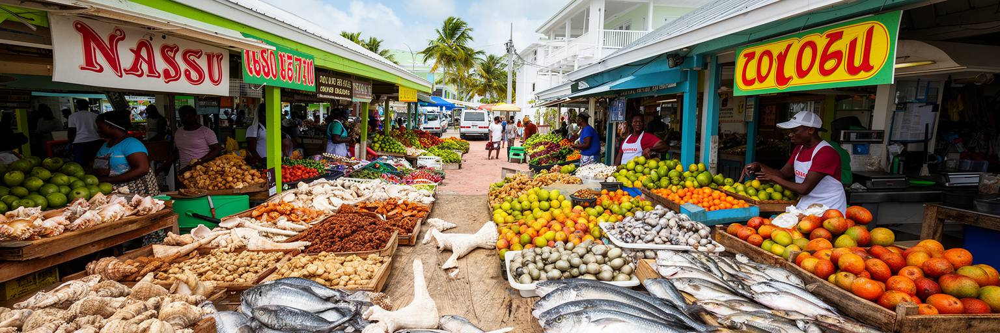
ナッソーの食文化は、海と港と市場の都市であることをよく示します。コンク、魚、ロブスター、米、豆、プランテン、スパイス、ラム、果物が、家庭料理、屋台、港前の店、ホテルのレストランで姿を変えます。旅行者はコンクサラダやフライ料理を楽しみますが、住民にとって食は家計、輸入価格、漁獲、健康、家族行事と結びつく日常です。島国では新鮮な魚介の豊かさがある一方、米、小麦、加工食品、飲料、燃料の多くを外部から運びます。港や為替、国際価格が食卓に影響し、低所得層ほど負担を受けやすいです。市場や屋台は、観光客と住民が近くで交わる数少ない空間でもあります。売り手の声、料理の香り、タクシー運転手の昼食、土産物を探す旅行者が混じる場所では、リゾートの均質なサービスとは違うナッソーが見えます。同時に、観光向けの価格上昇や衛生管理、漁業資源の持続性、若者の食生活の変化も課題です。食文化を守るには、地元の漁師、農家、料理人、学校、観光業がつながる必要があります。ナッソーの市場は、単に買い物をする場所ではなく、島の経済がどれだけ外部に頼り、どこに地元の工夫が残るのかを見せる都市の教室です。料理を作る人の知恵も、海と輸入の間で育ちます。海の恵みを楽しむことと、資源を使い尽くさないことは同じ課題です。日々の食卓が、島の持続性を静かに問い続けています。
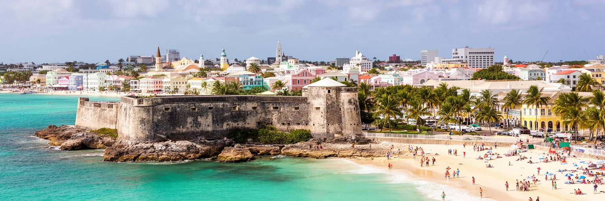
ナッソーを訪れる人の多くは、まず青い海と浜辺を思い浮かべます。ケーブルビーチ、パラダイス島、港に近い浜辺、ボートツアーは、バハマ観光の象徴です。しかし首都の魅力は、海岸だけではなく、要塞、階段、植民地期の建物、教会、市場、博物館、ジャンカヌーの街路と結びついています。ビーチ観光が強すぎると、都市の歴史や住民の生活は背景に押し込まれます。逆に歴史地区だけを歩いても、海が経済と日常を作る力は見えません。ナッソーでは、浜辺と遺産を同じ都市体験として読むことが大切です。海岸は住民の余暇の場であり、観光収入の源であり、開発圧力の対象でもあります。ホテル、別荘、港湾施設が海辺を占めるほど、地元の人が自由に使える浜辺や眺望は貴重になります。歴史遺産の保存も、観光写真のためだけではなく、住民が街の成り立ちを学び、誇りを持つために必要です。ナッソーの都市政策は、海岸アクセス、景観、文化施設、歩行環境、公共交通を結び、短い滞在でも複数の層を感じられるようにすることが求められます。案内板や歩道が整えば、浜辺から歴史地区へ歩く理由も増えます。浜辺の美しさと歴史の重さを切り離さずに見れば、ナッソーは単なる休暇先ではなく、海の帝国、奴隷制、独立、観光資本が重なる都市として立ち上がります。潮の音の近くで歴史を読むことが、この首都の理解を深めます。
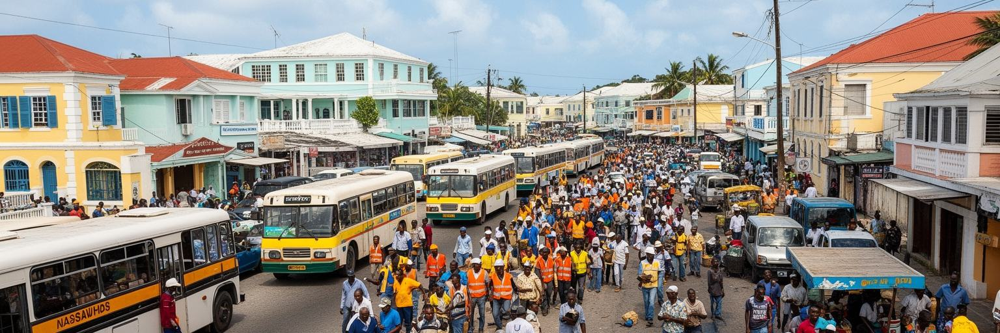
ナッソーの労働市場は、バハマ人だけでなく、カリブ海地域から移動してきた人びとにも支えられています。とくにハイチ系コミュニティの存在は、建設、家事労働、農園、サービス、非公式な仕事、教会、学校、近隣関係に深く関わっています。観光地の表舞台では、笑顔の接客や整ったリゾート空間が目立ちますが、その背後には清掃、調理、警備、送迎、修繕、港湾作業、住宅建設など、多くの手仕事があります。移民労働は都市を動かす一方、在留資格、差別、低賃金、住宅環境、教育アクセス、災害時の支援からこぼれやすい問題を抱えます。島国の首都では人口規模が限られるため、外から来る働き手なしに観光と建設を維持することは難しいです。しかし移民を単なる労働力として扱えば、社会の緊張は強まります。ナッソーが包摂的な都市であるためには、法的地位、学校、医療、住宅、地域対話を通じて、移動してきた人びとを都市の一員として扱う必要があります。バハマの主権と文化を守る議論は重要ですが、それは現実に街を支える労働を見えなくする理由にはなりません。ナッソーの港、ホテル、住宅地を歩くと、カリブ海の移動史が現在も続いていることが分かります。働く人の権利と都市の競争力は、対立するものではありません。安定した労働環境があって初めて、観光の品質も日常の安心も保たれます。
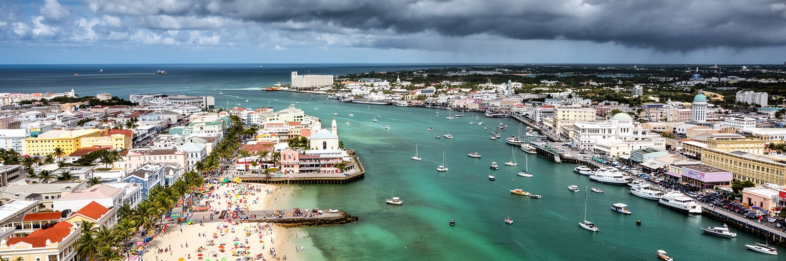
ナッソーを読む面白さは、楽園のイメージと首都の現実が同じ場所に重なる点にあります。港にはクルーズ船が並び、海岸には観光客が集まり、金融街では国際規制と資産管理が話し合われ、住宅地では通勤、学校、物価、治安、嵐への備えが続きます。パステル色の街並みや青い海は強い魅力ですが、それだけを見ていると、植民地支配、奴隷制、移民労働、輸入依存、住宅格差、気候リスクは見えにくくなります。ナッソーは小さな島の首都でありながら、米国観光市場、カリブ海の移動、国際金融、海洋環境、クルーズ産業という広い世界に接続しています。その接続は富を生みますが、外部の景気や船会社の判断、規制、嵐にも左右されます。都市を理解するには、港前の数時間だけでなく、市場、教会、学校、郊外の住宅地、金融事務所、防災の現場まで視野を広げる必要があります。ナッソーの強さは、海を使って世界に開く力にあります。課題は、その開放性が住民の暮らし、文化の尊厳、島の環境を損なわないように調整することです。観光の明るさ、ジャンカヌーの音、港の実務、金融の信用、ハリケーンへの備えを一つの都市として読む時、ナッソーは休暇の背景ではなく、カリブ海の現代都市として立ち上がります。その複雑さを見れば、短い滞在でも街の印象は深くなり、海の近さが都市の誇りと弱さを同時に示します。